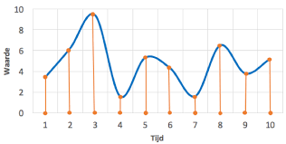

Net als tekst, kleuren en afbeeldingen is geluid ook een vorm van informatie die we willen vastleggen in een computer. Geluid bestaat uit trillingen in de lucht. De speakers van je computer of smartphone kunnen geluid produceren/afspelen.
Maar hoe wordt het geluid dat uit de speakers komt op een computer opgeslagen? Met andere woorden, hoe worden trillingen in de lucht omgezet naar een patroon van nullen en enen? Met een microfoon is het mogelijk om geluid, bijvoorbeeld muziek of een stem, op te nemen. De microfoon zet de trilling in de lucht om in een elektrisch signaal.
Een computer kan dit signaal omzetten naar digitale waarden. Dit proces wordt samplen genoemd. Tijdens het samplen wordt er op een vast moment, bijvoorbeeld 1 keer per seconde, gemeten wat de sterkte is van het geluid. Dit kun je in een grafiek weergeven.
Nog een uitleg filmpje om het duidelijker te maken. Uitleg filmpje
